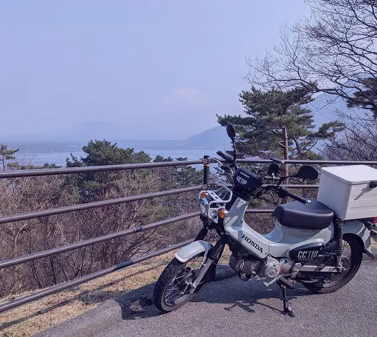

Shoji Akifumi
庄司明史
2000年2月11日に生まれ、みずがめ座のAB型
高校情報の授業でプログラミングに出会い楽しさを知る。高校卒業後工場に就職したが、クリエイティブな仕事への憧れと、プログラミングの楽しさを思い出し、Webデザインのスキルを学んで退職。
そして近所のデザイン会社にアルバイト入社。
数年後別の会社に正社員として採用されるが、独立の夢を抱くようになる。
そこで、1から体系的にデザインスキルを学ぶため、デジタルハリウッドのWebデザイナー専攻に入学。
そこで初めて同じ目標に向かって学ぶ仲間と出会い、モチベーションが上がる。
今後はさらに技術力、デザイン力そして提案力を伸ばし、顧客ユーザーが感動するようなサービスを提供できるようになりたいと考えている。
小学校にてゲーム音楽の魅力に目覚め、依頼好きな曲を収集するのが趣味に、上京後自分でも演奏したい気持ちと一人寂しい気持ちを満たすため、簡単そうに見えた楽器(ベース)の練習を始めバンドを組む。
もともとゲーム作りがプログラミングとの出会いのきっかけで、初めはUnityを学びゲームプログラマーを目指していたが断念。
今では遊びの範囲でUnityに触れている。
画像のオリジナルゲームはここで遊べる。

バイクが趣味の父の影響(?)で自分用のバイクを買う。今でもたまに一人旅をするが、ひと昔前はアニメの影響で毎週のようにどこかを走っていた。
中型免許までは取ったが、小型しか興味が無い。夏は走らない。
高校の授業にてプログラミングの楽しさを知り、卒業後工場に勤務しながらWeb制作に必要な知識を独学で学ぶ。
地元のデザイン会社の門を叩いて見習いWebデザイナーから始まり、現在は航空系業務アプリの開発に携わりながら、フリーのWebデザイナーになる目標に向けフライト中。
2018年から独学で学び、デジタルハリウッドにて学習。
実践に必要な内容を習得し、デザインデータから要素を捉え正確にコーディングする。
2018年から独学で学び、デジタルハリウッドにて学習中。HTMLと同様実践に必要な内容は習得している。
2023年の知識でストップしていたため、最新のCSSの進化具合に圧倒されている。
2018年から独学で学び、デジタルハリウッドにて学習中。jQueryも使えるが、私は断然Vanilla派。
ハンバーガーメニュー、スライダーなど基本的な動きの実装はコーディング可能。
現職にて主に使用している組み込み系プログラミング言語。
入社前の自主学習にてデスクトップアプリの開発を経験。
Pythonとは違う静的型付け言語に最初は毛嫌いしていたが、入社後その合理性を知り、今では型を指定しないと落ち着かなくなってしまった。
デザイン会社にて触れ、デジタルハリウッドにて学習中。
illustratorを利用し、看板や名刺のデザインもたまに行っていた。
デザイン会社にて触れ、デジタルハリウッドにて学習中。
業務では画像加工やバナー制作のため、Adobe製品の中で最も頻繁に利用していた。
デジタルハリウッドにて初めて触れる。
ワイヤーフレーム、プロトタイプの作成などをブラウザ上で手軽に行えることに感動している。
高校から学び、現職でも頻繁に利用している。
デザイン以外の一般的な事務作業も問題なく行える。
情報ビジネス科にて情報処理検定の資格を取得。
オフィス系ソフトを学び、マクロでのゲーム作りを通してプログラミングに出会う。
Webデザインに興味があったので、手っ取り早く実務経験を積むために地元のHP制作会社にアルバイト入社。
コーディング・デザインソフトの使い方、ざっくりとしたHP制作の流れを学ぶ。
バックエンドのシステム開発を学ぶため、主に航空系の業務用アプリケーションを開発している会社に入社。
チームの本格的な開発、タスク管理の手法を学ぶ。
Web制作専門のフリーランスになる夢を叶える手段として、独学で学んだWebデザインを体系的に学びなおすため入学。
共にコンセプトからデザインするデザイナーになりたいと考えている。